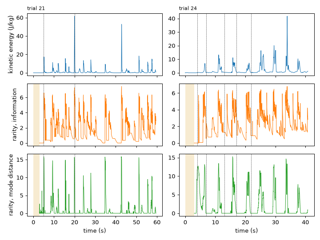

Analysis primitives#
Metrics that apply to any signal at any layer: entropy, rarity, periodicity, peaks, and the synchronization family with the high-level dominance.

Analysis primitives: complexity, rarity, periodicity
Analysis primitives: complexity, rarity, periodicity